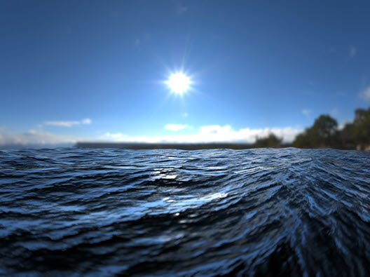

使用置换渲染海洋
本教程介绍如何只使用一个多边形平面和一个连接到 skydome_light 的 HDR 图像渲染海洋场景。海洋着色器的细节来自一张向量置换贴图。使用置换贴图功能时，要设置一系列属性。但是，使用正确的设置，要设置和获得逼真的效果就变得非常简单。
有关场景文件和向量置换贴图，请单击此处。
- 首先，创建一个可以用作海面的多边形平面：
海洋材质
- 创建一个 standard_surface 着色器，并将其指定给多边形平面。将 base_weight 设置为 0。将 specular_weight 增加到 1 左右。将 transmission_weight 增加到 1（这将使水变得透明）。最后，将 specular_IOR 设置为水的 IOR (1.33)。
向量置换贴图
这里使用的向量置换贴图是 32 位 EXR 图像。这意味着该贴图能够保留最高质量的向量置换效果。为获得更加逼真的波浪效果，我们将使用向量置换贴图来置换海浪。与仅在一个方向置换几何体的传统置换贴图不同，向量置换将围绕不同于法线的方向置换海洋几何体。
使用对象空间向量贴图创建海洋置换
如果海浪的效果看起来太锐利，您可以尝试模糊处理向量置换贴图来获得更平滑的海浪。
- 将向量贴图连接到 Maya 置换节点，应由连接到 Maya 置换节点（该节点连接到海洋材质的着色组节点）的向量置换贴图组成。
Ai 天穹灯光
创建一个 skydome_light 并将一个 HDR 贴图连接到它的 color 属性。
细分设置
- 渲染场景。竟然没有发生置换！这是因为我们的海洋平面几何体中没有足够的细分。
- 选择海洋平面，然后在 Arnold 属性下，将 subdivision_type 更改为 catclark，并增加迭代次数。从较小的值开始，例如 3：

subdivision_type：catclark、subdivision_iterations：3。
- 现在海面看起来不错，但其实还需要更多细节。将 subdivision_iterations 增加到 8。注意不要过分增大此值，因为每增加一次迭代，内存使用量和渲染时间会随之显著增加（每次迭代会使几何体变为原来的四倍）。
subdivision_iterations：8。海浪中可以看到更丰富的细节。
照明
- 最后，向场景中添加一个平行光。我们可以使用它加强阳光照在海面上的效果，从而突出海面上的高光。
使用带方向性的灯光进行渲染
- 增大带方向性的灯光的“角度”(Angle)属性将会增大灯光的角大小，从而在海面上形成更大的镜面反射。
角度 5
透射
由于光线在空气中的传播速度比在水中快，因此透射入海面的光会发生“折射”。当光进入水中时，会被海洋中的粒子散射或吸收。随着海洋的深度增加（密度更高），水会降低光穿透的深度。使用 standard_surface 着色器的透射 属性，很容易就能重现这种效果。当我们将一个物体放在海面内部时，可以看到这种效果。我们可以看到，光在网格内传播的距离越长，受蓝色 transmission_color 的影响越大。
| transmission_color： 白色 | transmission_color： 蓝色 |
当应用于海洋着色器时，我们可以从下图中看到 transmission_color 和 transmission_depth 对封闭的海面内的白色圆柱体产生的影响：
暗斑
海洋着色器并不是完全透明的。这意味着非掠射光线不会发生反射，而是折射和穿过水中（像现实世界中那样），但是因为它不是透明的，所以我们改为终止光线并得到黑色。
当着色法线背向光线时，尽管几何法线指向光线，着色法线也可能会造成问题。在本例中，着色（自动凹凸）法线光线照射的是水的背面，并应该向下反射，而现实生活中的光线照射的是水面网格的顶部。
在掠射角度，真实的水几乎是 100% 反射的，但即便如此，光也可能需要经过几次反弹才能离开波峰后面的波谷，甚至在经过几次反弹后，倒映出的地平线上的物体会比周围的水倒映出的物体更高。
更真实的外观是使水变得透明，然后在水下放置一个具有海水颜色的平面。在下面的示例图像中，海洋平面的 standard_surface 着色器的 emission_scale 为 1，emission_color 为蓝色/绿色。增加 subdivision_iterations 也有助于减少置换的海浪上的暗斑数量。
| subdivision_iterations： 3。暗斑可见 | 将 subdivision_iterations 增加到 8 可使问题得到缓解 |
波峰后面的暗斑（自身的倒影）也可以通过增大渲染设置中的 specular_ray_depth 得到改善。
| specular_ray_depth： 1 | specular_ray_depth： 2 |
总结
有关如何创建逼真可信的海洋场景的教程到此结束。使用正确的置换设置，结合高质量的 32 位向量置换贴图和正确的标准着色器设置，您应该能得到逼真的外观。您可以尝试添加景深，或将摄影机镜头改为鱼眼镜头之类的效果，为场景增添更多的视觉乐趣。
下面您可以看到，使用向量置换贴图营造海浪效果所能实现的细节要比使用常规几何体丰富多少：
 |
|
| 使用多边形几何体的海浪 | 相较于使用几何体，向量置换贴图可以实现更多细节 |

置换值的动画